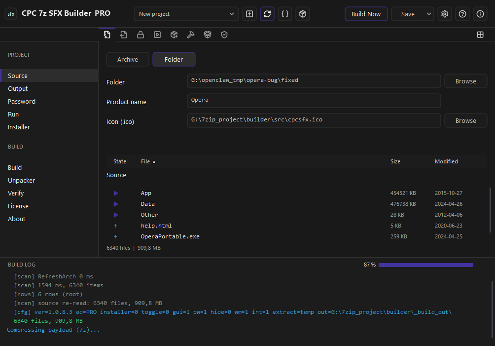

Source
The Source tab selects and verifies the input to be packaged. The software accepts both a local folder and an existing archive; after selection the content is scanned automatically and the file list shows the state before packaging. The same tab also edits the source directly: files and folders can be renamed, deleted, or a new folder can be created — even inside an archive.
Source type and path
The two-state switch at the top of the tab selects the source type: Archive or Folder. The Browse button opens the matching dialog, and the path appears in the field below the switch.
- Archive: the input is an existing compressed file. The browser starts in the
_originalfolder and filters to the supported formats. - Folder: the input is an unpacked program directory; the whole folder tree goes into the package.
Changing the switch also refreshes the list: if the path entered earlier does not match the new type, the list is cleared and a new path must be selected.
Configuration parameters
| Field | Description |
|---|---|
| Archive / Folder | Path of the archive or directory to package. It can be typed manually, but the browser is safer. |
| Product name | Package name and default output file name. It is filled in automatically from the source (folder name, or archive name without extension); after you edit it by hand, a later source change no longer overwrites it. |
| Icon (.ico) | Icon of the resulting .exe. This is the same setting as the SFX icon field on the Output tab; without it the built-in CPC icon is used. |
The program to start after extraction is set on the Run tab, and the password of the package content on the Password tab.
Supported formats
The software reads the following formats: 7z, zip, rar, tar, gz, bz2, xz, cab and iso. Listing is performed by the bundled 7-Zip, so accented file names and long paths are displayed correctly.
For an encrypted source archive the program asks for the password before scanning. The password belongs to the session: selecting a new source clears it, so another archive never inherits the previous password.
The file list
The list is not a flat enumeration but a folder view modelled on 7-Zip: it always shows the direct items of the current level. Folders are collapsed into a single row (the size column shows the total size of the files below them, and the item count appears at the right of the row), while files get their own rows.
| Item | Meaning |
|---|---|
| State | ✓ OK · ! changed since the recorded state · + new item. Items that disappeared from the source are not shown. |
| File | Name of the item on the current level. |
| Size | File size, or for a folder the total size of the files below it. |
| Date | Modification time stored in the source. |
Clicking a column header sorts the list: by File, Size or Modified, and clicking again reverses the direction. A small triangle marks the active column. Folders always stay on top, and the files are sorted by the selected criterion.
The breadcrumb above the header shows where you are: Source > Alpha > Sub. Clicking any segment jumps back to that level.
The summary row at the bottom shows how many files the source contains, the total size, how many items changed and how many are selected.
An empty folder is also listed (0 KB, 0 items). It can be entered, renamed and deleted — so a newly created folder is immediately visible and manageable.
The path of the selected item can be copied to the clipboard with Ctrl + C.
Navigation
| Action | Effect |
|---|---|
| Double-click a folder row | enter the folder |
| Enter | enter the selected folder |
.. row | one level up |
| Backspace | one level up |
| Click a breadcrumb segment | jump to that level |
| Scrollbar, mouse wheel, PgUp, PgDn, Home, End | move within the list |
The scrollbar is draggable and clicking its track pages through the list, so long lists stay manageable.
Selection
The list supports selecting several items at once, following the pattern of standard file managers.
| Action | Effect |
|---|---|
| Click a row | selects only that item |
| Ctrl + click | adds the item to the selection, or removes it |
| Shift + click | the range from the previously selected item to the clicked one |
| Ctrl + A | every row of the current folder |
| Click on the empty area of the list | clears the selection |
| Arrows, Home, End, PgUp, PgDn | move one item, the selection narrows to that item |
| Shift + arrow | extends the selection from the anchor |
With several items selected, the footer shows the count ("N selected"), and the focus row is marked with a narrow accent bar so it stays distinguishable from the rest of the selection.
Type-ahead
When the list has focus, typing letters jumps to the matching name. The first letter moves the selection to the first item starting with it, and pressing the same letter again moves to the next match, wrapping around. Typing several different letters narrows the prefix (for example "op" jumps to opera.exe). The jump is case-insensitive and accent-insensitive, and it starts a new prefix after one second of inactivity. The list content does not change; this is navigation only.
Adding files by drag and drop
Files and folders can be dragged from Explorer onto the Source list. The cursor indicates whether the source accepts the operation.
- With an archive source the program copies the dropped files into a temporary folder, then appends them to the archive with a single 7-Zip operation. The existing content is not recompressed, which keeps the operation fast even for large archives.
- With a folder source the files are copied into the folder and items with the same name may be overwritten.
- Before the operation a confirmation shows the number of files and the number of overwrites. The operation cannot be undone.
- While copying, the header status line shows the progress and the window stays usable.
- For a read-only format (for example rar, cab, iso) the drop does not start and the cursor shows that it is not allowed.
Context menu
On the source list the right mouse button opens the item menu on the selected item. If the cursor points at a row that is not selected yet, the menu selects it first.
| Item | Key | Action |
|---|---|---|
| Open | Enter | Enters the folder (active only for folders) |
| Rename | F2 | Renames the item in the source (single item, following the Explorer pattern) |
| Delete | Del | Removes the selected items from the source after confirmation |
| New folder | F7 | Creates a folder on the current level |
Rename and new folder
Rename and new folder both work on the current level, so starting them inside a subfolder creates or renames the item there. The name is validated: it cannot be empty, cannot contain \ / : * ? " < > |, cannot end with a dot or a space, and cannot collide with an existing name in the same folder — on a collision the program starts nothing and reports an error.
With an archive source the operation happens inside the archive, the files never touch the disk. Renaming a folder moves its entire content with it.
Delete
Del removes the selected items from the source. For several items a single confirmation is shown, listing at most five names and then the total count. With an archive source the deletion is a single operation and folders disappear together with their contents. The operation cannot be undone.
Which formats can be modified
The editor writes through the bundled 7-Zip, so the writable formats follow what 7-Zip itself can write:
| Format | Rename | Delete | New folder |
|---|---|---|---|
| 7z, zip, tar | yes | yes | yes |
SFX .exe (7z or zip based) | yes | yes | yes |
| gz, tgz, bz2, tbz, xz, txz | yes | no | no |
| rar, cab, iso | no | no | no |
RAR, CAB and ISO are read-only: 7-Zip can list and extract them but cannot write into them (RAR is a closed format). In those formats the builder shows a message before it would start the operation, instead of failing with a 7-Zip error. gz/bz2/xz are single-stream compressions: only the stored name can be changed.
